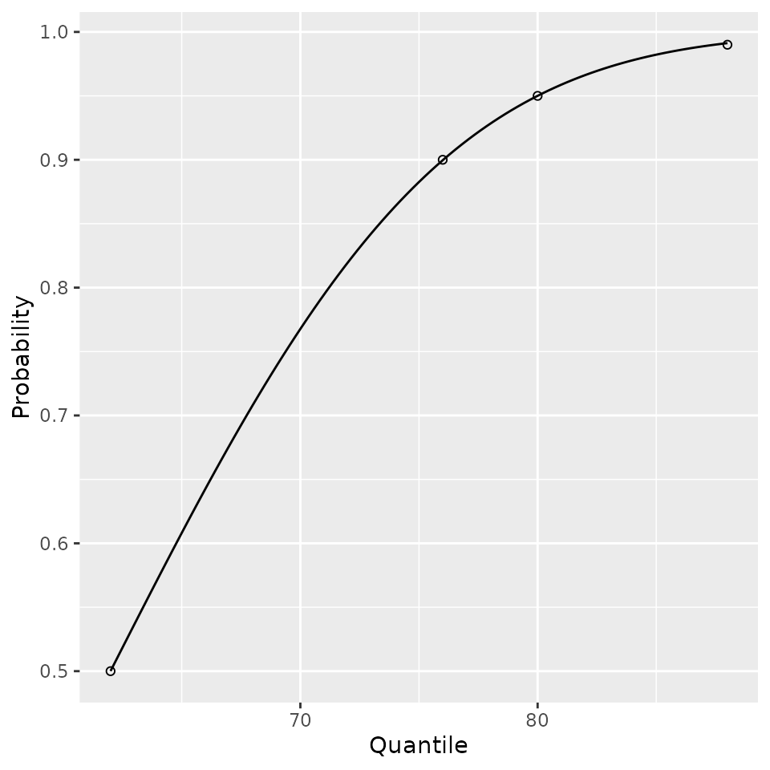
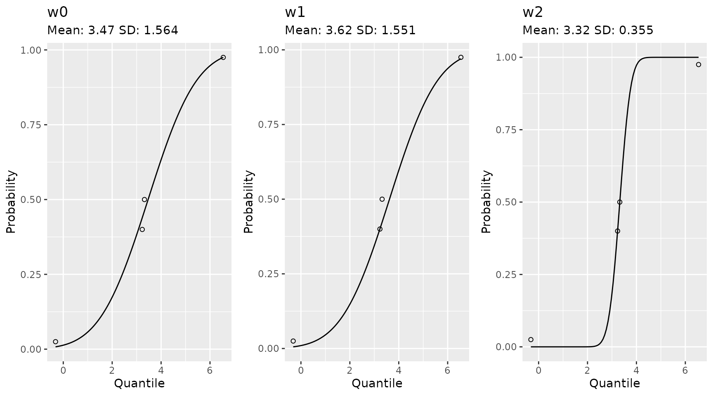

Additional Utilities
Source:vignettes/additional-utilities_ARTICLE.Rmd
additional-utilities_ARTICLE.RmdAdditional Utilities
Estimating Gaussian Mean and Standard Deviation
The NHLBI data for blood pressures provided values in percentiles. To get a mean and standard deviation that would work well for estimating other percentiles and quantiles via a Gaussian distribution we optimized for values of the mean and standard deviation such that for the provided quantiles at the percentiles and ,
was minimized. The NHLBI data is provided to the end user.
data(list = "nhlbi_bp_norms", package = "pedbp")
str(nhlbi_bp_norms)
## 'data.frame': 952 obs. of 6 variables:
## $ male : int 0 0 0 0 0 0 0 0 0 0 ...
## $ age : num 12 12 12 12 12 12 12 12 12 12 ...
## $ height_percentile: int 5 5 5 5 10 10 10 10 25 25 ...
## $ bp_percentile : int 50 90 95 99 50 90 95 99 50 90 ...
## $ sbp : int 83 97 100 108 84 97 101 108 85 98 ...
## $ dbp : int 38 52 56 64 39 53 57 64 39 53 ...For an example of how we fitted the parameters:
d <- nhlbi_bp_norms[nhlbi_bp_norms$age == 144 & nhlbi_bp_norms$height_percentile == 50, ]
d <- d[d$male == 0, ]
d
## male age height_percentile bp_percentile sbp dbp
## 321 0 144 50 50 105 62
## 322 0 144 50 90 119 76
## 323 0 144 50 95 123 80
## 324 0 144 50 99 130 88
est_norm(q = d$sbp, p = d$bp_percentile / 100)
## mean sd
## 105.00094 10.92093
est_norm(q = d$dbp, p = d$bp_percentile / 100)
## mean sd
## 61.99818 10.94217
bp_parameters[bp_parameters$male == 0 & bp_parameters$age == 144 & bp_parameters$height_percentile == 50, ]
## source male age sbp_mean sbp_sd dbp_mean dbp_sd height_percentile
## 89 nhlbi 0 144 105.0009 10.92093 61.99818 10.94217 50
## NA <NA> NA NA NA NA NA NA NA
## 357 flynn2017 0 144 104.9960 10.21414 62.00717 9.97793 50The est_norm method comes with a plotting method too. The provided quantiles are plotted as open dots and the fitted distribution function is plotted to show the fit.
plot( est_norm(q = d$dbp, p = d$bp_percentile / 100) )
## Error in get(paste0(generic, ".", class), envir = get_method_env()) :
## object 'type_sum.accel' not found
If you want to emphasize a data point you can do that as well. Here is an example from a set of quantiles and percentiles which are not Gaussian.
qs <- c(-1.92, 0.05, 0.1, 1.89) * 1.8 + 3.14
ps <- c(0.025, 0.40, 0.50, 0.975)
# with equal weights
w0 <- est_norm(qs, ps)
# weight to ignore one of the middle value and make sure to hit the other
w1 <- est_norm(qs, ps, weights = c(1, 2, 0, 1))
# equal weight the middle, more than the tails
w2 <- est_norm(qs, ps, weights = c(1, 2, 2, 1))
gridExtra::grid.arrange(
plot(w0) + ggplot2::ggtitle(label = "w0", subtitle = paste0("Mean: ", round(w0$par[1], 2), " SD: ", round(w0$par[2], 3)))
, plot(w1) + ggplot2::ggtitle(label = "w1", subtitle = paste0("Mean: ", round(w1$par[1], 2), " SD: ", round(w1$par[2], 3)))
, plot(w2) + ggplot2::ggtitle(label = "w2", subtitle = paste0("Mean: ", round(w2$par[1], 2), " SD: ", round(w2$par[2], 3)))
, nrow = 1
)